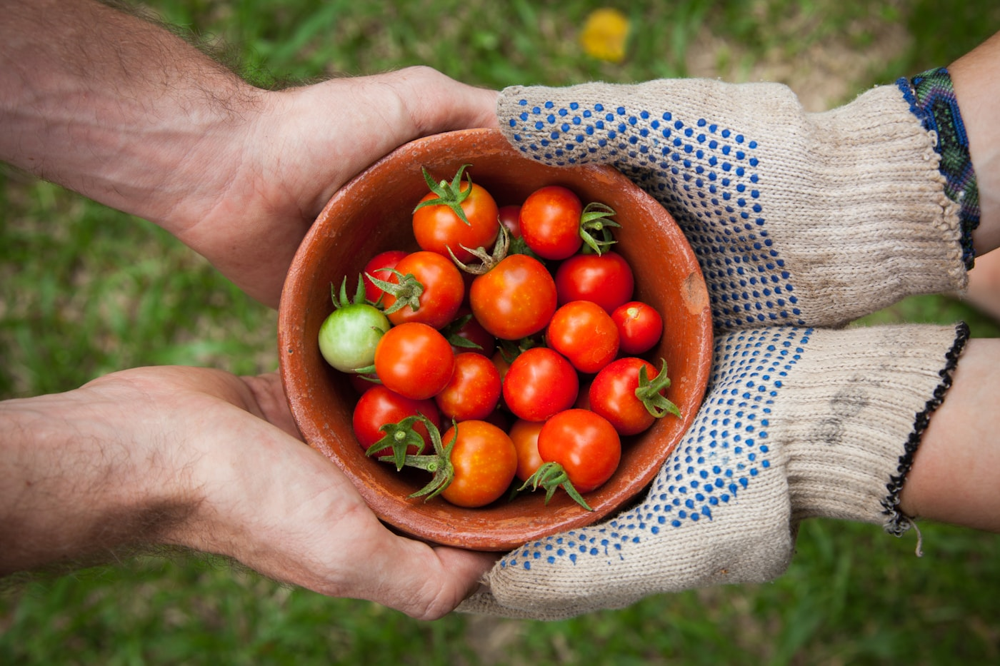

Organic First
Clear commitments shaped by growers, customers and the needs of the land.
We believe healthy communities begin with thriving farms, clear choices and food grown with patience.

Everleaf began with a simple weekend farm stand and a question: why should trustworthy food be difficult to find? We built direct relationships with nearby growers and made their harvest easier to bring home.
Today, our shelves pair fresh local food with thoughtfully chosen pantry essentials.
Standards that stay useful in daily decisions.
Clear commitments shaped by growers, customers and the needs of the land.
Clear commitments shaped by growers, customers and the needs of the land.
Clear commitments shaped by growers, customers and the needs of the land.
Clear commitments shaped by growers, customers and the needs of the land.
A steady next step built on trust.
A steady next step built on trust.
A steady next step built on trust.
A steady next step built on trust.
Organic practices can protect biodiversity, build soil resilience and reduce reliance on synthetic inputs. For us, certification is a foundation—not the end of the conversation.

Market people, produce experts and careful listeners.
Founder & Organic Sourcing Lead
Builds transparent relationships with growers.
Nutrition & Product Specialist
Curates useful, clearly labeled pantry foods.
Farm Partnership Manager
Works beside farms from planning to harvest.
Customer Experience Lead
Makes every delivery feel personal and simple.
Everything arrives fresh, neatly packed and noticeably better than supermarket produce. The weekly box has made seasonal cooking feel effortless.

The sourcing notes make it easy to understand where our food comes from. Quality has stayed excellent, even during busy delivery weeks.

Beautiful produce, sensible packaging and genuinely helpful support. It feels like shopping at a trusted neighborhood market from home.